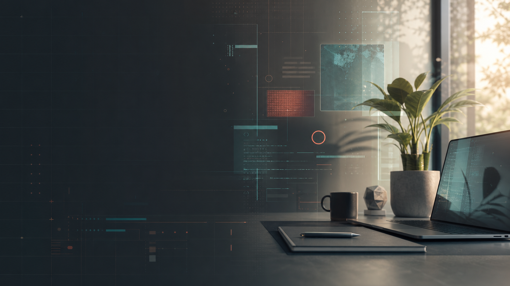

参与服务流程设计、服务触点梳理与体验优化。
Lilian的作品
AI产品经理｜UI｜交互体验设计师｜Design + Vibe Coding

Portrait area
Lin Zhou
UX Designer / Interaction Designer
Profile
把复杂体验整理成清楚、可测试、能落地的设计系统。
我关注 UX、服务设计、HMI、多媒体交互与沉浸式体验。我的设计习惯是先理解真实场景， 再把用户需求、任务路径、视觉反馈和技术边界整理成团队能执行的方案。
参与平面视觉、UI 表达和数字内容设计。
用户研究、服务蓝图、信息架构、交互原型、UI 视觉和多模态体验。
Selected Project Archive
Open a folder to see the case.
每个文件夹是一份设计档案：包含项目背景、我的角色、关键设计判断与最终结果。 点击任意文件夹打开项目详情。